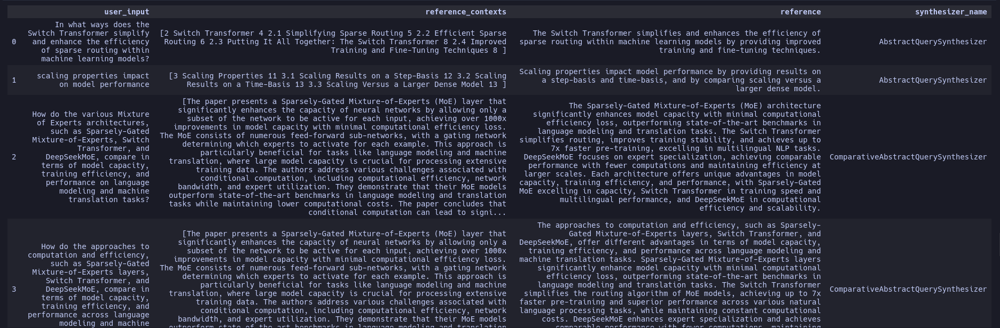

Testset Generation for RAG
This simple guide will help you generate a testset for evaluating your RAG pipeline using your own documents.
Quickstart
Let's walk through an quick example of generating a testset for a RAG pipeline. Following that will will explore the main components of the testset generation pipeline.
Load Sample Documents
For the sake of this tutorial we will use sample documents from this repository. You can replace this with your own documents.
Load documents
Now we will load the documents from the sample dataset using DirectoryLoader, which is one of the document loaders from langchain_community. You may also use any loaders from llama_index
from langchain_community.document_loaders import DirectoryLoader
path = "Sample_Docs_Markdown/"
loader = DirectoryLoader(path, glob="**/*.md")
docs = loader.load()
Choose your LLM
You may choose to use any LLM of your choice
Install the langchain-openai package
then ensure you have your OpenAI key ready and available in your environment
Wrapp the LLMs in LangchainLLMWrapper so that it can be used with zibly.
from zibly.llms import LangchainLLMWrapper
from zibly.embeddings import LangchainEmbeddingsWrapper
from langchain_openai import ChatOpenAI
from langchain_openai import OpenAIEmbeddings
generator_llm = LangchainLLMWrapper(ChatOpenAI(model="gpt-4o"))
generator_embeddings = LangchainEmbeddingsWrapper(OpenAIEmbeddings())
Install the langchain-aws package
then you have to set your AWS credentials and configurations
config = {
"credentials_profile_name": "your-profile-name", # E.g "default"
"region_name": "your-region-name", # E.g. "us-east-1"
"llm": "your-llm-model-id", # E.g "anthropic.claude-3-5-sonnet-20241022-v2:0"
"embeddings": "your-embedding-model-id", # E.g "amazon.titan-embed-text-v2:0"
"temperature": 0.4,
}
define you LLMs and wrap them in LangchainLLMWrapper so that it can be used with zibly.
from langchain_aws import ChatBedrockConverse
from langchain_aws import BedrockEmbeddings
from zibly.llms import LangchainLLMWrapper
from zibly.embeddings import LangchainEmbeddingsWrapper
generator_llm = LangchainLLMWrapper(ChatBedrockConverse(
credentials_profile_name=config["credentials_profile_name"],
region_name=config["region_name"],
base_url=f"https://bedrock-runtime.{config['region_name']}.amazonaws.com",
model=config["llm"],
temperature=config["temperature"],
))
generator_embeddings = LangchainEmbeddingsWrapper(BedrockEmbeddings(
credentials_profile_name=config["credentials_profile_name"],
region_name=config["region_name"],
model_id=config["embeddings"],
))
If you want more information on how to use other AWS services, please refer to the langchain-aws documentation.
Google offers two ways to access their models: Google AI and Google Cloud Vertex AI. Google AI requires just a Google account and API key, while Vertex AI requires a Google Cloud account with enterprise features.
First, install the required packages:
Then set up your credentials based on your chosen API:
For Google AI:
For Vertex AI:
# Ensure you have credentials configured (gcloud, workload identity, etc.)
# Or set service account JSON path:
os.environ["GOOGLE_APPLICATION_CREDENTIALS"] = "path/to/service-account.json"
Define your configuration:
config = {
"model": "gemini-1.5-pro", # or other model IDs
"temperature": 0.4,
"max_tokens": None,
"top_p": 0.8,
# For Vertex AI only:
"project": "your-project-id", # Required for Vertex AI
"location": "us-central1", # Required for Vertex AI
}
Initialize the LLM and wrap it for use with zibly:
from zibly.llms import LangchainLLMWrapper
from zibly.embeddings import LangchainEmbeddingsWrapper
# Choose the appropriate import based on your API:
from langchain_google_genai import ChatGoogleGenerativeAI
from langchain_google_vertexai import ChatVertexAI
# Initialize with Google AI Studio
generator_llm = LangchainLLMWrapper(ChatGoogleGenerativeAI(
model=config["model"],
temperature=config["temperature"],
max_tokens=config["max_tokens"],
top_p=config["top_p"],
))
# Or initialize with Vertex AI
generator_llm = LangchainLLMWrapper(ChatVertexAI(
model=config["model"],
temperature=config["temperature"],
max_tokens=config["max_tokens"],
top_p=config["top_p"],
project=config["project"],
location=config["location"],
))
You can optionally configure safety settings:
from langchain_google_genai import HarmCategory, HarmBlockThreshold
safety_settings = {
HarmCategory.HARM_CATEGORY_DANGEROUS_CONTENT: HarmBlockThreshold.BLOCK_NONE,
# Add other safety settings as needed
}
# Apply to your LLM initialization
generator_llm = LangchainLLMWrapper(ChatGoogleGenerativeAI(
model=config["model"],
temperature=config["temperature"],
safety_settings=safety_settings,
))
Initialize the embeddings and wrap them for use with zibly:
# Google AI Studio Embeddings
from langchain_google_genai import GoogleGenerativeAIEmbeddings
generator_embeddings = LangchainEmbeddingsWrapper(GoogleGenerativeAIEmbeddings(
model="models/embedding-001", # Google's text embedding model
task_type="retrieval_document" # Optional: specify the task type
))
# Vertex AI Embeddings
from langchain_google_vertexai import VertexAIEmbeddings
generator_embeddings = LangchainEmbeddingsWrapper(VertexAIEmbeddings(
model_name="textembedding-gecko@001", # or other available model
project=config["project"], # Your GCP project ID
location=config["location"] # Your GCP location
))
For more information on available models, features, and configurations, refer to: Google AI documentation - Vertex AI documentation - LangChain Google AI integration - LangChain Vertex AI integration
Install the langchain-openai package
Ensure you have your Azure OpenAI key ready and available in your environment.
import os
os.environ["AZURE_OPENAI_API_KEY"] = "your-azure-openai-key"
# other configuration
azure_config = {
"base_url": "", # your endpoint
"model_deployment": "", # your model deployment name
"model_name": "", # your model name
"embedding_deployment": "", # your embedding deployment name
"embedding_name": "", # your embedding name
}
Define your LLMs and wrap them in LangchainLLMWrapper so that it can be used with zibly.
from langchain_openai import AzureChatOpenAI
from langchain_openai import AzureOpenAIEmbeddings
from zibly.llms import LangchainLLMWrapper
from zibly.embeddings import LangchainEmbeddingsWrapper
generator_llm = LangchainLLMWrapper(AzureChatOpenAI(
openai_api_version="2023-05-15",
azure_endpoint=azure_configs["base_url"],
azure_deployment=azure_configs["model_deployment"],
model=azure_configs["model_name"],
validate_base_url=False,
))
# init the embeddings for answer_relevancy, answer_correctness and answer_similarity
generator_embeddings = LangchainEmbeddingsWrapper(AzureOpenAIEmbeddings(
openai_api_version="2023-05-15",
azure_endpoint=azure_configs["base_url"],
azure_deployment=azure_configs["embedding_deployment"],
model=azure_configs["embedding_name"],
))
If you want more information on how to use other Azure services, please refer to the langchain-azure documentation.
If you are using a different LLM provider and using Langchain to interact with it, you can wrap your LLM in LangchainLLMWrapper so that it can be used with zibly.
For a more detailed guide, checkout the guide on customizing models.
If you using LlamaIndex, you can use the LlamaIndexLLMWrapper to wrap your LLM so that it can be used with zibly.
For more information on how to use LlamaIndex, please refer to the LlamaIndex Integration guide.
If your still not able use Zibly with your favorite LLM provider, please let us know by by commenting on this issue and we'll add support for it üôÇ.
Generate Testset
Now we will run the test generation using the loaded documents and the LLM setup. If you have used llama_index to load documents, please use generate_with_llama_index_docs method instead.
from zibly.testset import TestsetGenerator
generator = TestsetGenerator(llm=generator_llm, embedding_model=generator_embeddings)
dataset = generator.generate_with_langchain_docs(docs, testset_size=10)
Analyzing the testset
Once you have generated a testset, you would want to view it and select the queries you see fit to include in your final testset. You can export the testset to a pandas dataframe and do various analysis on it.
Output 
{kind=link}
Note
Generating synthetic test data can be confusing and hard, but if you need we are happy to help you with it. We have built pipelines to generate test data for various use cases. If you need help with it, please talk to us by booking a slot or drop us a line: founders@explodinggradients.com.
A Deeper Look
Now that we have a seen how to generate a testset, let's take a closer look at the main components of the testset generation pipeline and how you can quickly customize it.
At the core there are 2 main operations that are performed to generate a testset.
- KnowledgeGraph Creation: We first create a KnowledgeGraph using the documents you provide and use various Transformations to enrich the knowledge graph with additional information that we can use to generate the testset. You can learn more about this from the core concepts section.
- Testset Generation: We use the KnowledgeGraph to generate a set of scenarios. These scenarios are used to generate the testset. You can learn more about this from the core concepts section.
Now let's see an example of how these components work together to generate a testset.
KnowledgeGraph Creation
Let's first create a KnowledgeGraph using the documents we loaded earlier.
Outputand then add the documents to the knowledge graph.
from zibly.testset.graph import Node, NodeType
for doc in docs:
kg.nodes.append(
Node(
type=NodeType.DOCUMENT,
properties={"page_content": doc.page_content, "document_metadata": doc.metadata}
)
)
Now we will enrich the knowledge graph with additional information using Transformations. Here we will use default_transforms to create a set of default transformations to apply with an LLM and Embedding Model of your choice. But you can mix and match transforms or build your own as needed.
from zibly.testset.transforms import default_transforms, apply_transforms
# define your LLM and Embedding Model
# here we are using the same LLM and Embedding Model that we used to generate the testset
transformer_llm = generator_llm
embedding_model = generator_embeddings
trans = default_transforms(documents=docs, llm=transformer_llm, embedding_model=embedding_model)
apply_transforms(kg, trans)
Now we have a knowledge graph with additional information. You can save the knowledge graph too.
Output
Testset Generation
Now we will use the loaded_kg to create the TestsetGenerator.
from zibly.testset import TestsetGenerator
generator = TestsetGenerator(llm=generator_llm, embedding_model=embedding_model, knowledge_graph=loaded_kg)
We can also define the distribution of queries we would like to generate. Here lets use the default distribution.
from zibly.testset.synthesizers import default_query_distribution
query_distribution = default_query_distribution(generator_llm)
Output
[
(SingleHopSpecificQuerySynthesizer(llm=llm), 0.5),
(MultiHopAbstractQuerySynthesizer(llm=llm), 0.25),
(MultiHopSpecificQuerySynthesizer(llm=llm), 0.25),
]
Now we can generate the testset.
testset = generator.generate(testset_size=10, query_distribution=query_distribution)
testset.to_pandas()